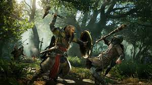

The best 5 open world adventure Games
An adventure game (rarely called a quest game[citation needed]) is a video game genre in which the player assumes the role of a protagonist in an interactive story, driven by exploration and/or puzzle-solving.[1] The genre's focus on story allows it to draw heavily from other narrative-based media, such as literature and film, encompassing a wide variety of genres. Most adventure games (text and graphic) are designed for a single player, since the emphasis on story and character makes multiplayer design difficult.[2] Colossal Cave Adventure is identified by Rick Adams[3] as the first such adventure game, first released in 1976, while other notable adventure game series include Zork, King's Quest, Monkey Island, Syberia, and Myst.